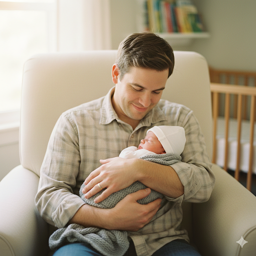
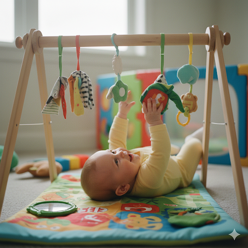
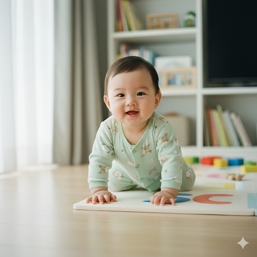

Your Baby's First Year: The Year That Changes You Forever
No one prepares you for how fast the first year goes: one day you are learning how to hold a tiny head, and soon after you see your baby trying to stand.
The first year is not only about growth. It is a constant transformation of your baby and also of you. If you are here, you may be wondering: Is everything okay? Is this normal? Should my baby already be doing that?
Breathe. Let's talk about all of this without pressure.
When they arrive: they are more prepared than we think
Newborns look fragile, but they come with powerful reflexes that help them survive from minute one: turning toward touch on the cheek, automatic sucking, and that surprisingly strong grip around your finger.
Even the startle that can feel scary at first is a normal reflex. Many automatic movements fade in the first months, and that is a good sign: the brain is maturing and taking voluntary control.
Your pediatrician checks these reflexes in visits, and you also learn to recognize them over time.
It is not only when they do something, but how they live it
Development is not a checklist to pass. It is a living process across several connected areas:
- How your baby moves.
- How your baby communicates.
- How your baby understands the world.
- How your baby bonds with you.
When babies feel safe, they explore more. When they explore more, they learn more. And when they learn more, they try more. You are their base.
The journey trimester by trimester (without obsessing over the calendar)
0 to 3 months: learning to be outside the womb

These first months are adaptation. Vision is still blurry, but your baby can recognize your face. Your voice is calming, your smell feels safe, and early head lifting begins during tummy time.
Your baby communicates by crying, and little by little you learn each pattern. Around six weeks, that first social smile often appears. It feels small, but it changes everything.
4 to 6 months: discovering personal power

Here babies realize they can act on the world. They roll, grab, and bring everything to their mouth. Not to challenge you, but because the mouth is a core exploration tool.
Repeated sounds and laughter show up more often. Familiar faces become preferred, and strangers may feel less comfortable. The social map is being built.
7 to 9 months: the world expands

Suddenly there is movement everywhere: sitting, crawling (or scooting, or rolling), and sometimes pulling to stand with furniture support.
Separation distress may appear. If your baby cries when you leave, it is not bad habit formation. It is healthy attachment. Peekaboo also becomes fascinating because object permanence is developing.
10 to 12 months: almost independent

This final stretch is intense and exciting. Babies pull to stand, cruise, and sometimes take first independent steps. Many begin pointing to request, saying mama or papa with intention, and understanding simple commands.
They are not only reacting anymore. They are interacting with intent.
The most important thing to remember
- Not every baby walks by twelve months.
- Not every baby says clear words before one year.
- Not every baby crawls.
Milestones are broad windows, not exact deadlines. Some babies observe first and move later. Others jump in quickly.
When to talk with your pediatrician
If a concern keeps coming back, talk with your pediatrician. Asking for help is also great care.
Your presence is the true engine of development
More than advanced toys or complex exercises, development is most supported by simple, repeated connection:
- Talking to your baby.
- Responding to babbling.
- Playing on the floor together.
- Holding your baby when fear appears.
- Celebrating attempts, even when they are not perfect.
The first year is not a competition. It is the foundation of emotional security.
Years from now, you will not remember whether walking happened at month 11 or 14. You will remember the smell, the laughter, and those tiny hands holding yours.
The first year goes fast. Track progress calmly and celebrate each small win.